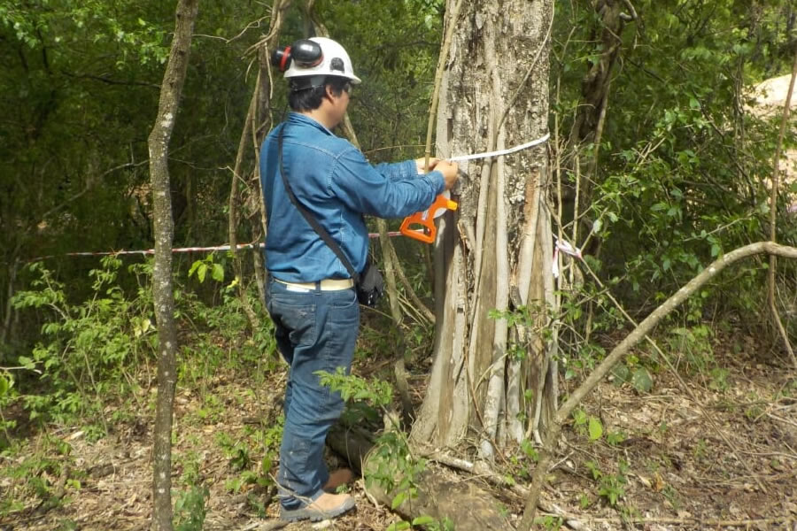

AGRICULTURA GANADERÍA FORESTAL
* Evaluación de aptitud productiva. * Diagnóstico de factibilidad y/o formulación de proyectos. * Estudio de impacto ambiental y social de proyectos productivos. * Asesoramiento en sistemas forestales. * Aprovechamientos forestales y planes de manejo.